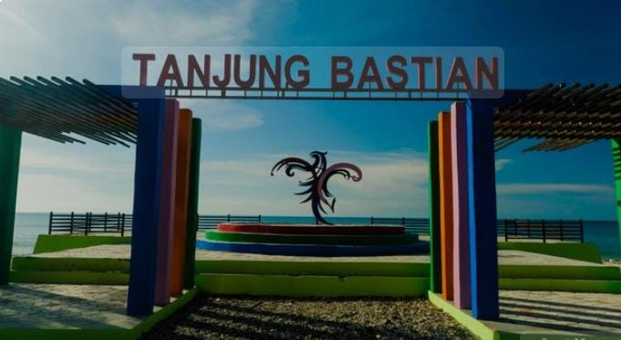
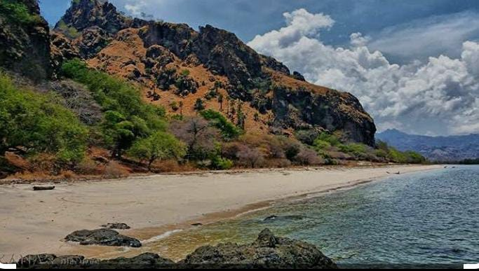
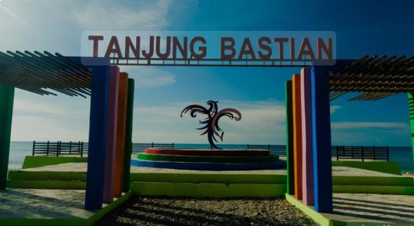
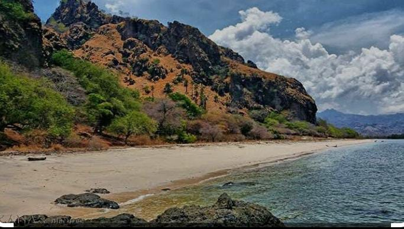

Profil Pengunjung
Pantai Tanjung Bastian menjadi salah satu destinasi favorit bagi berbagai kalangan, baik wisatawan lokal maupun luar daerah. Pengunjung yang datang umumnya terdiri dari:
- Warga Lokal: Masyarakat sekitar Timor Tengah Utara dan sekitarnya, sering berkunjung saat akhir pekan atau hari libur.
- Wisatawan Domestik: Turis dari daerah seperti Kupang dan Belu datang untuk menikmati panorama pantai.
- Pelancong dari Timor Leste: Karena lokasinya dekat perbatasan RI-RDTL, beberapa pengunjung berasal dari negara tetangga.
- Pelajar & Mahasiswa: Kerap mengadakan kunjungan edukatif atau camping sambil belajar tentang alam dan lingkungan.
🏖 Kegiatan Favorit Pengunjung
- Bersantai & Berpiknik: Banyak keluarga membawa tikar dan makanan untuk bersantai di bawah pohon rindang.
- Bermain Air & Pasir: Anak-anak hingga dewasa menikmati berenang dan bermain pasir.
- Berfoto & Menikmati Sunset: Tempat ini sangat fotogenik, terutama saat matahari terbenam.
- Festival & Acara Budaya: Saat ada pacuan kuda atau acara adat, pantai dipadati ribuan pengunjung.
🎫 Tarif Masuk
- Roda Dua (Motor): Rp 3.000 per orang
- Mobil: Rp 20.000 per kendaraan
- Truk: Rp 30.000 per kendaraan
Contoh: Jika dua orang datang naik motor, maka total biaya masuk adalah Rp 6.000.
🕓 Jam Operasional
Pantai Tanjung Bastian buka selama 24 jam, memungkinkan pengunjung menikmati suasana pantai kapan saja, baik pagi, siang, sore, maupun malam hari.